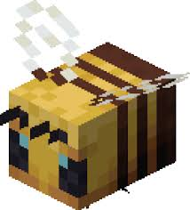
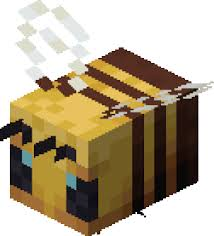

Sobre as Abelhas
As abelhas são insetos importantes para a polinização de várias plantas e flores. Elas vivem em colmeias organizadas e possuem um papel crucial na manutenção da biodiversidade e na produção de alimentos.

As abelhas são insetos importantes para a polinização de várias plantas e flores. Elas vivem em colmeias organizadas e possuem um papel crucial na manutenção da biodiversidade e na produção de alimentos.

As abelhas desempenham um papel vital no ecossistema. Elas ajudam a polinizar muitas das plantas que usamos para alimentação, como frutas, vegetais e nozes. Sem as abelhas, muitas dessas plantas não poderiam se reproduzir, o que afetaria a cadeia alimentar e a biodiversidade.
Para mais informações sobre abelhas ou para colaborar com projetos de preservação, entre em contato conosco:
Email: contato@abelhas.com